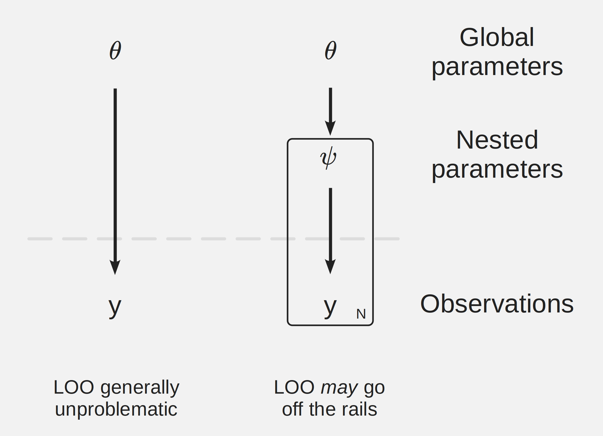
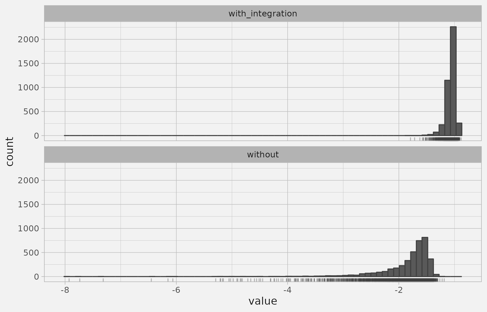

Code
library(cmdstanr)Andrew Ghazi
September 22, 2023
This is a guide/walkthrough on how to use the “Integrated Importance Sampling” aka “Integrated LOO” technique from (Vehtari et al., n.d.). I’ve found myself needing to do this a couple times now, so I’m writing this walkthrough to:
Load some setup libraries:
The LOO method as implemented in the loo package requires an array of log-likelihood values for every observation at every iteration in the MCMC chains. There are some addtional complications around extensions like k-fold LOO and leave-one-group-out, but I’m going to ignore those. There’s a built in example in the loo package from a model fit with 32 observations - here’s the first 3 of 1000 rows (i.e. the MCMC chain took 1000 draws):
[,1] [,2] [,3] [,4] [,5] [,6] [,7] [,8] [,9] [,10] [,11] [,12]
[1,] -2.37 -2.31 -2.34 -2.42 -2.31 -2.31 -2.68 -3.02 -2.59 -2.33 -2.32 -2.35
[2,] -2.12 -1.88 -2.05 -2.04 -1.86 -1.88 -2.93 -3.37 -2.39 -1.88 -1.92 -1.92
[3,] -2.24 -1.94 -2.17 -2.01 -1.89 -1.93 -3.01 -3.13 -2.29 -1.89 -1.98 -1.93
[,13] [,14] [,15] [,16] [,17] [,18] [,19] [,20] [,21] [,22] [,23] [,24]
[1,] -2.31 -2.38 -2.33 -2.40 -3.30 -4.27 -2.60 -4.13 -2.39 -2.50 -2.63 -2.61
[2,] -1.86 -2.10 -1.92 -2.09 -4.31 -6.07 -2.32 -5.69 -2.21 -2.45 -2.81 -2.73
[3,] -1.89 -2.16 -1.95 -2.13 -4.25 -5.40 -2.15 -5.00 -2.35 -2.54 -2.91 -2.79
[,25] [,26] [,27] [,28] [,29] [,30] [,31] [,32]
[1,] -2.55 -2.38 -2.36 -2.51 -2.78 -2.43 -2.54 -2.31
[2,] -2.36 -1.93 -1.90 -2.14 -3.25 -2.30 -2.56 -1.89
[3,] -2.30 -1.91 -1.89 -2.03 -3.38 -2.43 -2.65 -1.96LOO works by looking at the distributions of observation-wise log-likelihoods to assess how strongly each observation influences the overall fit. Low log-likelihood = strong influence on fit.
Observation-wise log-likelihood values can be unstable when a given observation strongly influences the posterior for a related parameter. Normally you’ll notice this when a Stan model gets through the MCMC stage without any warnings, but the Pareto k diagnostics come out badly when you try to run LOO and warning messages go off.

I’ve come across this twice:
Why are unstable log-likehood values problematic? Because it makes estimating that observation’s contribution to the model fit challenging. When the log-likelihood values are unstable, the importance ratios can have high or infinite variance (Vehtari, Gelman, and Gabry 2017). The loo package automatically performs Pareto smoothed importance sampling to smooth the importance weights. This estimates a generalized Pareto distribution to the tail of each log-likelihood distribution. The k parameter of this Pareto distribution is used as a diagnostic to assess whether or not the leave-one-out distribution for the observation in question has been accurately characterized by the log-likelihood values from the MCMC fit.
The example below compares log-likelihood values for a single observation over two long MCMC chains evaluated with and without integration.
# Result of the anpan tutorial example with n = 300
load("~/misc/output/result_with_int_n300.RData", verbose = TRUE)
loo_df_with_int_loo <- result_with_int$loo$pglmm_ll_df
geryon::args2ge(anpan_pglmm)
meta_file <- result_with_int$model_input
tree_file <- tr
outcome <- "outcome"
covariates <- "covariate"
# <step through anpan_pglmm(), then use nonint_loo to get the loo values>
# V This is pglmm_loo.R from anpan with some updates to drop the integration, the key distinction being the log_lik_i_j_gaussian function below.
source("~/misc/R/pglmm_nonint_loo.R")
# THIS IS NOT INTEGRATED!!!
log_lik_i_j_gaussian <- function(effect_j,
mu_bar_j, sigma_bar_j, # phylo term components
sigma_resid, yj, lm_term, # LM term components
offset_term) {
phylo_term <- dnorm(effect_j,
mean = mu_bar_j,
sd = sqrt(sigma_bar_j),
log = TRUE
)
model_mean <- c(lm_term) + effect_j
fit_term <- dnorm(
x = yj,
mean = model_mean,
sd = sigma_resid,
log = TRUE
)
res <- phylo_term + fit_term - offset_term
return(res)
}
ll_attempt <- safely_get_ll_mat(draw_df,
effect_means = effect_means,
cor_mat = cor_mat,
Lcov = Lcov,
Xc = Xc,
offset_val = data_list$offset_val,
Y = data_list$Y,
family = family,
verbose = verbose
)
ll_mat <- ll_attempt$result
nonint_loo <- loo::loo(
x = ll_mat,
r_eff = loo::relative_eff(exp(ll_mat),
chain_id = draw_df$`.chain`
)
)
nonint_loo
k <- which.max(nonint_loo$diagnostics$pareto_k) # 280
nonint_loo$diagnostics$pareto_k[k] # 280
int_comp <- tibble(
with_integration = loo_df_with_int_loo[[paste0("log_lik[", k, "]")]],
without = ll_mat[, k]
) |> pivot_longer(everything(), names_to = "type")
int_comp |>
ggplot(aes(value)) +
geom_histogram(
bins = 60,
color = "grey25"
) +
facet_wrap("type", nrow = 2) +
geom_rug(
alpha = .333,
color = "grey25"
) +
theme_light() +
theme(
text = element_text(color = "grey10"),
strip.text = element_text(color = "grey10"),
plot.background = element_rect(color = "grey95", fill = "grey95"),
panel.background = element_rect(color = "grey95", fill = "grey95"),
panel.grid = element_line(color = "grey75")
)
Ignoring the slight shift in the location of the distribution, you should note the much heavier tail without integration. The Pareto k diagnostic for this observation is 1.003 (“very bad”) without integration, so the LOO model comparison to some other model would not be feasible without integration.
High pareto k diagnostics = high or infinite variance loo distribution = inaccurate/misleading loo model comparison.
A way around this is “integrated” LOO. This involves computing the log-likehood in a different way, by integrating out the parameter causing the instability. Usually loo expects a variable called log_lik in the generated quantities block of the Stan model. This usually looks something like this:
generated quantitites {
vector[N] log_lik;
for (i in 1:N) log_lik[i] = normal_lpdf(y[i] | mu, sigma);
}This example is only for a very simple normal outcome model of course. There might also be regression coefficients, group-level parameters, etc involved in computing the log-likelihood, depending on the model.
By contrast, in the PGLMM example I flagged above, I had something analogous to this:
generated quantitites {
vector[N] log_lik;
for (i in 1:N) log_lik[i] = normal_lpdf(y[i] | observation_mu[i], sigma);
}That observation_mu[i] is a problem. The observation-level mean parameter varies a lot and is only weakly influenced by the -i observations. log_lik[i] produced in this way will have extremely high or infinite variance.
The key to computing a stable log_lik[i] is to integrate out observation_mu[i]. You can work out the integral analytically if you have a nice Gaussian model, but I’m going to go over the more problematic case where you have to evaluate it numerically.
It’s easy to say “integrate out the parameter”, but it’s harder to understand what that means. For me it was really difficult to even identify the integral that I needed to perform.
The key was to recall that the problematic parameter that I needed to integrate out depended on other higher level hyperparameters that I was also sampling in the MCMC chain. Elsewhere in the program I had a line to this effect:
observation_mu ~ multi_normal(0, sigma^2*cor_mat);So when we need to integrate out observation_mu[i], that means we need to integrate the log-likelihood not only over the outcome variable Y distributed according to observation_mu[i], but also over the distribution of observation_mu[i] conditioned on the other parameter values of that posterior draw. In this case, that’s a multivariate normal conditioned on observation_mu[-i] and sigma at each iteration. We’ll cover how to calculate the conditional distribution later.
I’ll work with a simplified version of the PGLMM example (no intercepts, covariates, etc). Here’s a tiny data simulation with sigma_phylo = 1 and sigma_resid = 0.5:
This is the Stan model. It’s essentially just a continuous outcome with phylogenetically-distributed and normally-distributed error. The model needs to assess how much variation to ascribe to residual variance versus phylogenetic variance according to the pre-established phylogenetic structure (passed in as a Cholesky factor Lcov). I also include the unstable log-likelihood calculations in the generated quantities:
data {
int<lower=1> N; // total number of observations
vector[N] Y; // response variable
matrix[N, N] Lcov; // cholesky factor of known covariance matrix
}
parameters {
real<lower=0> sigma_resid; // residual variation
real<lower=0> sigma_phylo; // spread of phylo_effects
vector[N] std_phylo_effects;
}
transformed parameters {
array[N] real phylo_effects;
phylo_effects = to_array_1d(sigma_phylo * (Lcov * std_phylo_effects));
}
model {
// likelihood
for (i in 1:N) target += normal_lpdf(Y[i] | phylo_effects[i], sigma_resid);
// priors
target += std_normal_lpdf(sigma_resid) - normal_lccdf(0 | 0, 1);
target += std_normal_lpdf(sigma_phylo) - normal_lccdf(0 | 0, 1);
target += std_normal_lpdf(std_phylo_effects);
}
generated quantities {
vector[N] log_lik;
// This will yield unstable log-likelihood values:
for (i in 1:N){
log_lik[i] = normal_lpdf(Y[i] | phylo_effects[i], sigma_resid);
}
}Let’s run it:
dir_prefix <- if (interactive()) "~/miscR/qmd/" else ""
model_path <- paste0(dir_prefix, "stan/simple_pglmm.stan")
out_dir <- paste0(dir_prefix, "cmdstanr_out/")
m <- cmdstan_model(model_path)
data_list <- list(
N = n,
Y = sim_outcome,
Lcov = Lcov
)
pglmm_fit <- m$sample(
data = data_list,
refresh = interactive() * 500,
parallel_chains = 4,
show_messages = interactive(),
show_exceptions = interactive(),
output_dir = out_dir
)Warning: 7 of 4000 (0.0%) transitions ended with a divergence.
See https://mc-stan.org/misc/warnings for details.It samples fine, but the loo results are not good:
Warning: Some Pareto k diagnostic values are too high. See help('pareto-k-diagnostic') for details.
Computed from 4000 by 150 log-likelihood matrix
Estimate SE
elpd_loo -258.1 8.4
p_loo 61.4 5.0
looic 516.2 16.7
------
Monte Carlo SE of elpd_loo is NA.
Pareto k diagnostic values:
Count Pct. Min. n_eff
(-Inf, 0.5] (good) 64 42.7% 292
(0.5, 0.7] (ok) 61 40.7% 111
(0.7, 1] (bad) 24 16.0% 26
(1, Inf) (very bad) 1 0.7% 32
See help('pareto-k-diagnostic') for details.That’s a lot of bad diagnostics! We’ll fix this with integration.
We’re going to evaluate the integral in R. More on that later. For now, just know that we’ll need to write a vectorized R function that takes a vector of phylo_effect[i] values and returns the likelihood (not log!) for observation i using the parameter values from mcmc chain iteration j. Other arguments derived from other parameters at the interation are also required. Those other arguments include:
phylo_effect[-i]), which depend on the iteration’s sigma_phylo value.sigma_resid valueHere’s the function. It adds together the target terms that depend on phylo_effect[i]:
y[i]vec_integrand <- function(phylo_effect_vec,
mu_bar_ij, sigma_bar_ij,
sigma_resid_j, yi,
log = FALSE) {
phylo_term <- dnorm(phylo_effect_vec,
mean = mu_bar_ij,
sd = sqrt(sigma_bar_ij),
log = TRUE
)
fit_term <- dnorm(
x = yi,
mean = phylo_effect_vec,
sd = sigma_resid_j,
log = TRUE
)
res <- phylo_term + fit_term
if (!log) res <- exp(res)
return(res)
}sigma_resid_j and yi are fairly obvious. What about mu_bar_ij and sigma_bar_ij? Given the structure of the model, the mean and standard deviation of phylo_effects[i] are conditional on phylo_effects[-i] and sigma_phylo[j]. We’ll have to use the conditional distribution of a multivariate normal:
\[ \bar{\boldsymbol{\mu}} = \boldsymbol{\mu}_1 + \boldsymbol{\Sigma}_{12}\boldsymbol{\Sigma}_{22}^{-1}(\boldsymbol{a} - \boldsymbol{\mu}_2)\]
\[\bar{\boldsymbol{\Sigma}} = \boldsymbol{\Sigma}_{11} - \boldsymbol{\Sigma}_{12} \boldsymbol{\Sigma}_{22}^{-1} \boldsymbol{\Sigma}_{21}\]
Here \(\bar{\boldsymbol{\mu}}\) is mu_bar_ij and \(\bar{\boldsymbol{\Sigma}}\) (which reduces to a 1x1 matrix) is sigma_bar_ij.
You can look up the 11 vs 12 vs 22 notation on the wikipedia link but basically \(\Sigma\) is rearranged to have the i-th element in the first row/column, then partitioned into the ith vs everything else.
The tricky part here is \(\Sigma_{22}^{-1}\), which is the inverse of an (n-1) x (n-1) matrix. We’ll do two things to make this computationally feasible in general:
sigma_phylo so we’re working in terms of the correlation matrix \(\Omega\), which doesn’t vary with posterior iterationsigma_phylo[j] can give you theFor the sake of brevity I’m not going to use the Woodbury identity and instead just call solve() 150 times. That’s in the next section.
This code chunk does a lot of the book-keeping to prepare lists of correlation matrix products and format the posterior draws into a nice draw_list.
get_corr_mat_minus_i_inv <- function(i, cor_mat, n) {
cor_mat[-i, -i] |>
solve()
}
# precompute lists of corr_11, corr_12, corr_22_inv, and corr_12 * corr_22_inv
corr_minus_i_list <- lapply(1:n,
get_corr_mat_minus_i_inv,
cor_mat = cor_mat, n = n
)
corr_12_list <- lapply(
1:n,
\(i) cor_mat[
c(i, (1:n)[-i]),
c(i, (1:n)[-i])
][1, -1, drop = FALSE]
)
corr_11 <- diag(cor_mat)
corr12xcorr22_inv_list <- lapply(
1:n,
\(i) corr_12_list[[i]] %*% corr_minus_i_list[[i]]
)
corr_11_i_list <- sapply(
1:n,
\(i) corr_11[i] -
corr12xcorr22_inv_list[[i]] %*% t(corr_12_list[[i]])
)
get_sigma_bar_ij <- function(sigma_phylo, corr_minus_i_list,
corr_12_list) {
# returns a vector
sqrt(sigma_phylo^2 * corr_11_i_list)
}
get_mu_bar_ij <- function(a) {
# mu_1 and mu_2 are 0
sapply(
1:n,
\(i) corr12xcorr22_inv_list[[i]] %*% matrix(a[-i], ncol = 1)
)
}
draw_df <- pglmm_fit$draws(
c(
"phylo_effects",
"sigma_resid",
"sigma_phylo"
),
format = "data.frame"
) |>
tidybayes::tidy_draws(
sigma_resid, sigma_phylo,
phylo_effects[i]
)
draw_list <- draw_df |>
dplyr::mutate(phylo_effect_vectors = lapply(
1:4000,
\(x) as.numeric(draw_df[x, 1:n])
)) |>
dplyr::select(-matches("phylo_effects")) |>
dplyr::group_split(`.draw`) # one list element per drawSo using one draw from the draw_list we prepared in the previous section, along with the functions get_mu_bar_ij() and get_sigma_bar_ij(), we can get the set of mu_bar_ij and sigma_bar_ij for each observation for this one draw:
Let’s evaluate the integrand for an (arbitrarily selected) phylogenetic effect of 0.333 for the fifth observation on the first draw:
t136
0.02345266 A reasonable-looking number, hooray!
Instead of just evaluating at an arbitrary point, let’s integrate it numerically. vec_integrand() as written actually has an analytic integral (the sum of two parabolas is just another parabola, so you can work out an expression for the integral), but I’m going to do it numerically for the more generic case (which I also do in anpan for logistic PGLMM LOO).
In the roaches example they use Stan’s built-in integrate_1d() function. While it’s nice to keep the log-likelihood calculation in the Stan program, the interface is unwieldy to me. You have to pass in ALL of the secondary real-valued arguments into the integrand function in a single argument, which is tricky when that includes many irregularly structured components. Same goes for integers. To me, doing the integral after the fact in R is much simpler. You can then hand the log-likelihood matrix directly to loo::loo().
The R function stats::integrate() uses adaptive quadrature to numerically integrate functions. I don’t know much about how it works, but it internally calls C code for the heavy lifting, so it’s pretty fast. It would be interesting to benchmark it against Stan’s integrate_1d().
Anyway, you just hand stats::integrate() the function, the integration range, and other needed arguments.
0.1941623 with absolute error < 3.8e-05Another reasonable number, hooray!
Going further, let’s write a couple functions to evaluate the integral for all observations in a given draw:
integrate_one_obs <- function(mu_bar_ij, sigma_bar_ij, Y,
sigma_resid) {
integrate(
vec_integrand,
-Inf, Inf,
mu_bar_ij, sigma_bar_ij,
sigma_resid, Y
)$value
}
integrate_all_obs <- function(draw_j) {
mu_bar_ij <- draw_j$phylo_effect_vectors[[1]] |> get_mu_bar_ij()
sigma_bar_ij <- draw_j$sigma_phylo |> get_sigma_bar_ij(
corr_minus_i_list,
corr_12_list
)
mapply(integrate_one_obs,
mu_bar_ij, sigma_bar_ij, data_list$Y,
sigma_resid = draw_j$sigma_resid
)
}
system.time({
draw42_integrals <- integrate_all_obs(draw_list[[42]])
}) user system elapsed
0.02 0.00 0.02 [1] 0.14 0.24 0.27 0.27 0.21 0.23 0.19 0.14 0.11 0.29 0.29 0.30 0.31 0.29 0.29
[16] 0.24 0.09 0.25 0.05 0.34 0.33 0.23 0.18 0.21 0.33 0.34 0.30 0.03 0.30 0.20
[31] 0.06 0.27 0.10 0.22 0.15 0.27 0.24 0.34 0.21 0.28 0.14 0.30 0.33 0.29 0.35
[46] 0.31 0.20 0.25 0.28 0.28 0.29 0.33 0.31 0.00 0.04 0.34 0.28 0.33 0.32 0.33
[61] 0.06 0.12 0.06 0.29 0.23 0.27 0.31 0.28 0.01 0.29 0.29 0.23 0.31 0.22 0.23
[76] 0.32 0.27 0.28 0.34 0.33 0.29 0.13 0.26 0.22 0.34 0.22 0.34 0.27 0.10 0.28
[91] 0.13 0.26 0.23 0.32 0.33 0.29 0.32 0.20 0.33 0.31 0.28 0.03 0.29 0.29 0.31
[106] 0.07 0.39 0.20 0.11 0.31 0.28 0.30 0.30 0.27 0.09 0.31 0.16 0.03 0.26 0.12
[121] 0.16 0.12 0.30 0.12 0.28 0.16 0.22 0.34 0.07 0.32 0.21 0.30 0.16 0.08 0.29
[136] 0.07 0.19 0.27 0.26 0.31 0.33 0.32 0.07 0.29 0.30 0.15 0.09 0.10 0.25 0.16Fast, reasonable likelihoods!
Finally, let’s apply it to every posterior draw. I just remembered that purrr::map() recently introduced a .progress argument, let’s use it. purrr is sick.
It only takes a minute on my laptop, but of course with larger datasets / more complicated models it can slow down a bit. That purrr::map() call is embarassingly parallelizable.
Finally we can see the loo results with the stable Pareto k diagnostics. We feed in the chain ID numbers so that loo is aware of the relative effective sample sizes:
Warning: Some Pareto k diagnostic values are slightly high. See help('pareto-k-diagnostic') for details.
Computed from 4000 by 150 log-likelihood matrix
Estimate SE
elpd_loo -259.6 7.8
p_loo 16.5 1.7
looic 519.1 15.6
------
Monte Carlo SE of elpd_loo is 0.1.
Pareto k diagnostic values:
Count Pct. Min. n_eff
(-Inf, 0.5] (good) 149 99.3% 852
(0.5, 0.7] (ok) 1 0.7% 1762
(0.7, 1] (bad) 0 0.0% <NA>
(1, Inf) (very bad) 0 0.0% <NA>
All Pareto k estimates are ok (k < 0.7).
See help('pareto-k-diagnostic') for details.Okay, so there may be one or two that are just “ok”, but way, way better and totally usable!
Integrated LOO involves performing a numerical integral for every observation at every posterior iteration. That’s a lot of integrals. Performance can be a concern. Techniques that I’ve found to be helpful:
In the PGLMM example, I needed leave-one-out conditional covariance matrices for each observation on trees that had up to ~3000 leaves. Computing a conditional covariance matrix involves inverting the sub-block of the covariance matrix that you’re conditioning on. Inverting a 2999 x 2999 matrix once isn’t so bad, inverting 3000 2999 x 2999 matrices 4000 times is. There were two key points to solving this (the latter of which came from help on StackExchange): 1) get the covariance matrix at each iteration by simply multiplying the iteration’s variance parameter times a precomputed conditional correlation matrix that didn’t change with iteration. That removes the factor of 4000. And 2) precompute the conditional correlation matrix with the Woodbury matrix identity from the inverse correlation matrix I already had before the MCMC fit. A leave-one-out operation can be encoded as a rank two update, so that took me from 3000 2999x2999 inverses to 3000 2x2 inverses. Nice. The Woodbury matrix identity does introduce some numerical inaccuracy which necessitates some additional checks (beyond being huge, the phylogenetic trees can also yield poorly conditioned correlation matrices), but it’s generally worth it.
In tension with the speed concerns we also have numerical accuracy concerns. The integral has to be evaluated on the identity scale, not the log scale. It has to be \(log(\int{exp(loglik)d\theta})\). \(\int{loglik d\theta}\) won’t work. This can cause over/underflow issues depending on the model / data.
This post is already too long, so I won’t demonstrate it here, but the key to overcoming this is a technique akin to the LogSumExp() trick, kind of like LogIntExp() or something. Optimize the integrand, then use the optimal value as an offset when integrating, then subtract the contribution of that constant off of the integral.
Also of concern are the integration limits. Sometimes, for very low values of sigma_phylo in this case, the integrand function can be extremely sharp. To stats::integrate() it will look like a flat function at 0, so you’ll get 0. anpan uses some tricks to optimize the integrand, look at the curvature, then go out a reasonable number of SDs in order to capture the body of the spike. Different sorts of problems can also occur if the integrand is extremely flat and you chose a poor offset value.